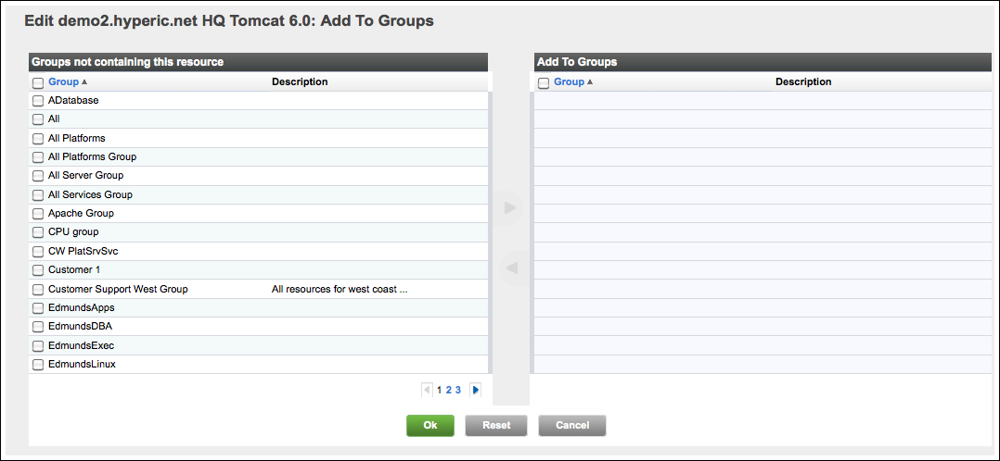

vFabric Hyperic 4.6.5 : ui-Inventory.Group.AddResource
This page last changed on Jan 04, 2012 by mmcgarry.
Assign Resource Groups
To add a resource to one or more groups:
- Navigate to the resources's Inventory page, if it is not currently selected.
- Click Add To List in the Groups Containing this Resource section of the page.
- The Add to Groups page lists groups to which the resource can be added:
- Compatible groups that contain resources of the same type as the current resource. For example, you can add a platform whose type is "Linux" to compatible groups that contain "Linux" platforms.
- Mixed groups that contain resources of the inventory type of the current resource. For example, you can add a platform (of any type) to mixed groups that contain "Platforms, Servers, and Services", but not a mixed group that contains "Groups".

- Checkmark desired groups and click the blue arrow to move them from the Groups not containing this resource column to the Add to Groups column. (The arrow is enabled when you select a resource.)
- Click OK to add the resource to the groups you have chosen.
{kind=link}
{kind=link}
{kind=link}
{kind=link}
{kind=link}